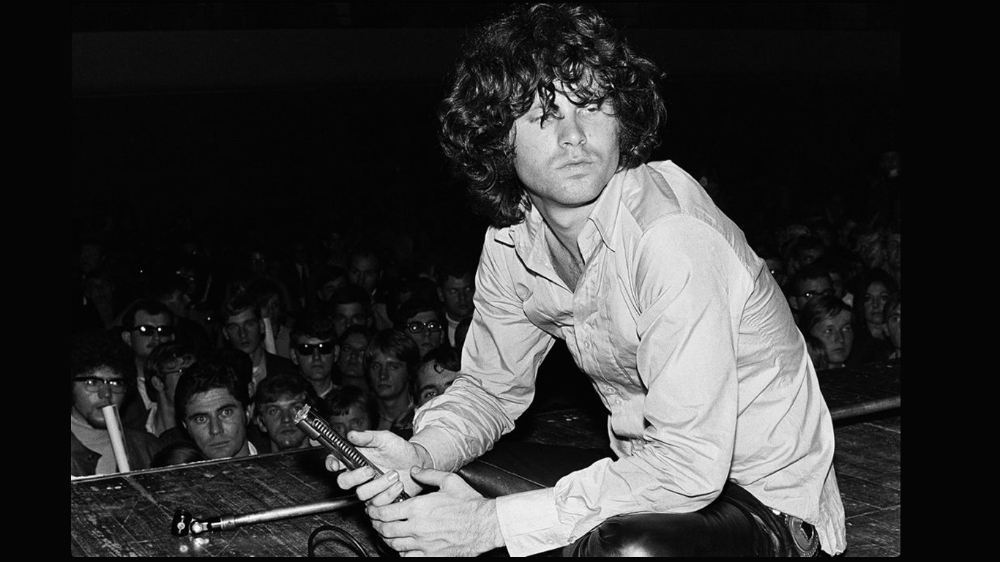

Jim Morrison
James Douglas Morrison fue un cantautor y poeta estadounidense, célebre por ser el vocalista y líder de The Doors. Nació el 8 de diciembre en Melbourne, Florida y falleció el 3 de julio de 1971 en Paris.

Jim perteneció a la banda de The Doors
Canciones más famosas
- L.A. Woman
- Light my Fire
- Roadhouse blues
- Riders on the storm